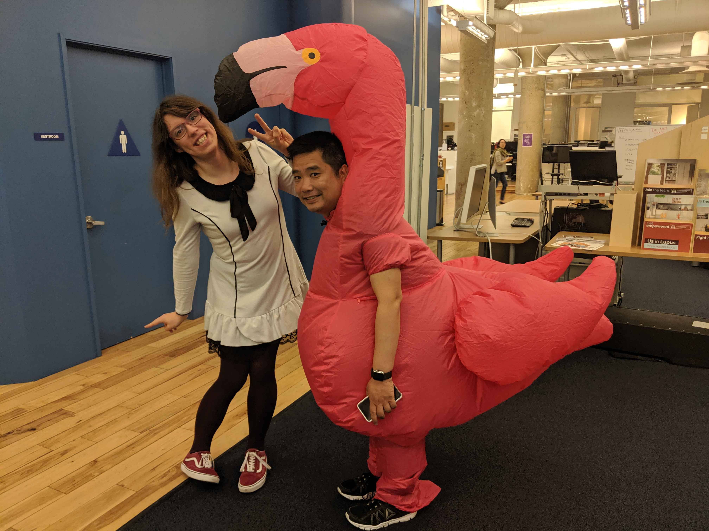
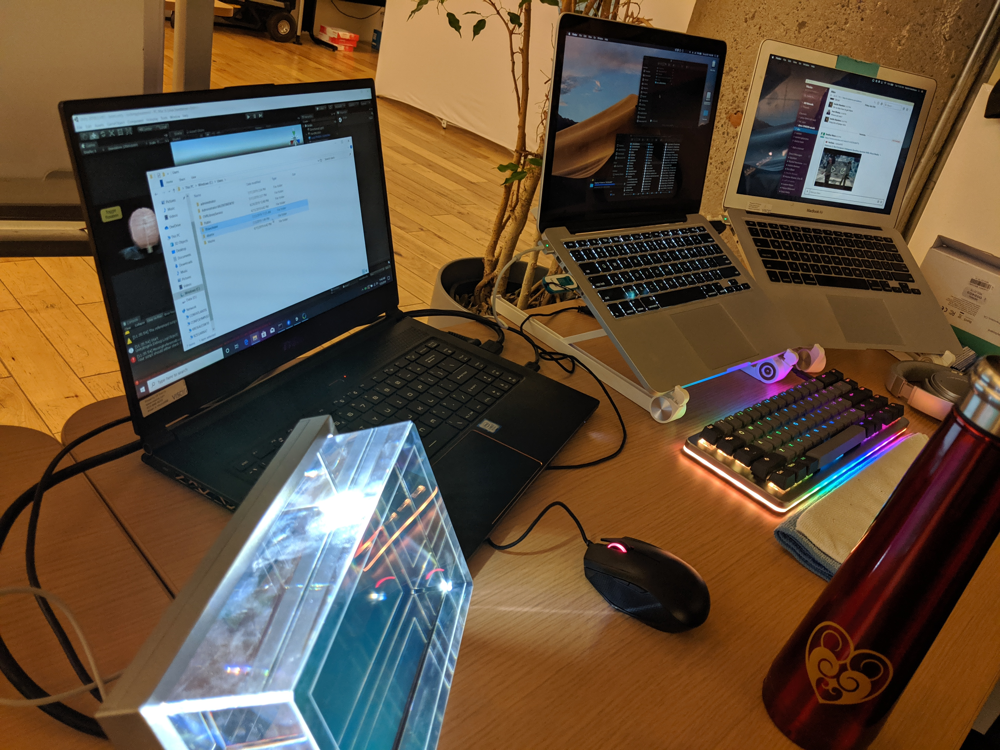

Rachel Vancleave - CNIT 132
Meetup Report
Hello world!
So, Covid-19 didn't do any favors for us. Our daily lives changed, our work changed, our schooling changed. But I'm sure we'll be ok. Which leads into the meetup report. Because Covid-19 has created our shelter in place and social distancing, it made this assignment kind of had to acomplish. But I decided to leverage what I can and talk about web development and how it's used at my part time job I have as Viscira (www.viscira.com)! How we build sites, any frameworks we use, the tools we use for development. I'll try and condense it as much as possible so it's not too long.
Viscira is an animation company, focusing in the medcal industry. There's a web development team that build websites for medical companies along side animations based on their specifications requested. I'm a part of that web development team assisting any projects that needs any help. So far i've delved into HTML, CSS/SCSS, JS, PHP at work, on just about a daily basis. It's definently a different feeling working on all of this in the real world rather than in a class, it's pretty surreal and has an interesting feeling that you know that what you've been doing actually is being used for something bigger than simple school projects or even personal projects.
Heres me on the left with the IT Manager at Viscira in a inflatable flamingo outfit. It wasnt halloween.
I got hired on prior to taking this class, CNIT 132 and the other class CNIT 133. I had some knowledge prior with a couple sites I've made in high school at least 10 years ago with that old web development class I took then. It only taught HTML so I had to pick up and figure out how CSS worked during that time too. My task when i got hired was to assist on building a site about glaucoma. We used CSS animations for moving between different parts of the site to have an interactive feel to it, to have them "go on a journey around the eye". Javascript was used to keep track of the current state the user is in, their previous states they were in and as well as initiating transitions between states to traverse to different parts of the eye. After that, any of the content of the site was pulled from a headless cms we had setup, in this case we used Drupal and used it for storing content. I learned a lot from that, but I was assiting on the project with the lack of skill I had overall. Then this spring 2020 semester comes by and I decide to take CNIT 132 and 133 so I can learn the skills to really push myself even further at work, which overall has been a very positive experience.
My desk when I was an intern, summer 2013. 3 different computers controled by a single keyboard and mouse and a 3d holographic display for displaying 3d graphics
Taking what I learned from this class and 133 has been surreal espeically since I'm learning at school, and applying what i've learned at work. It's even more surreal when you go to class, learn a topic, and then actually see that topic you learned at work the next day and you know how to use it. This overall has been a superemely positive experience from start to finish.
Becasuse of my lack of expereince, I was often given easier tasks to do, I did make sure I did my best at the tasks given, and to ask questions when it came around. We mainly use Angular as our javascript framework. Then from there we decide what to do next depending on the clients needs. From using a CMS or not, to just a simple html site with basic javascript bu tnice styling and animations. We're pretty flexable, and I've been given tasks that use just about everything there so It's really nonstop learning.
The top railing for my new desk when I became a part time contarctor. I added 2 bunny plushies to keep me company! This was taken days before Covid-19 lockdown.

Everyone I work with is supportive, and considering my lack of skills, they're patient and wiling to take their time with me to help me learn and understand what's going on. A really nice, diverse group of people that I work with. It's really a shame because of Covid-19, we can't all see face to face. We're all counting down the days we can safely return to the office.
I don't know how to conclude this. But what I can say really is that this class, CNIT 132 and the other class CNIT 133 are both tremendous espeically with helping me understand web development as a whole. I went from someone who knew the basics and couldn't do anything at all web related, to someone who knows enough to get her feet off the ground and help around on other projects. Still need a lot of practice though, web is harder than I thought it would be (To be fair, I find C/C+++ supremely easy so you could say I'm more technical than creative).